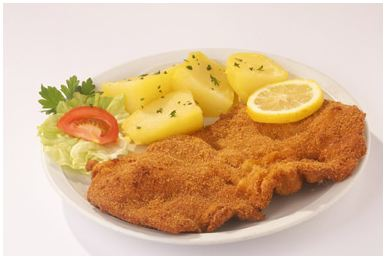

Ingredients:
- 2 pieces of veal (approx. 180-200g each)
- 1 egg
- 2 tablespoons of flour
- 2-3 tablespoons of breadcrumbs
- Salt and pepper
- 1 quarter lemon
- Oil for frying
Preparation:
- Prepare meat: trim tendons and flatten with a meat hammer.
- Meat thickness should be halved.
- Mix flour with salt and pepper.
- Beat the egg with a tablespoon of water.
- Coat the meat in flour, removing excess.
- Dip the meat into the beaten egg.
- Coat with breadcrumbs, pressing gently.
- Fry until golden and crispy.
- Place on paper towels to absorb oil.
- Serve traditionally with potato salad, lemon, and wine.
| Vegetable |
Per 100 grams |
|
GL |
Available carbs |
GI |
Beta-carotene |
| Beetroot canned |
60 |
9 gr |
6 |
5 ug |
| Carrots-raw |
49 |
7 gr |
8 |
69 ug |
| Corn on the cob-cooked |
38 |
20 gr |
10 |
20 ug |
| Pumpkin -peeled and cooked |
51 |
4 gr |
3 |
345 ug |
*source
http://www.gisymbol.com